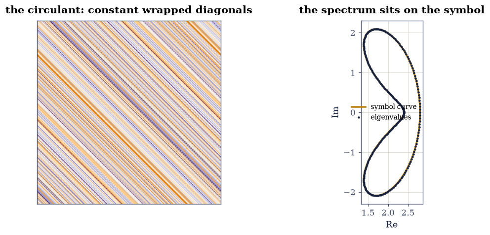
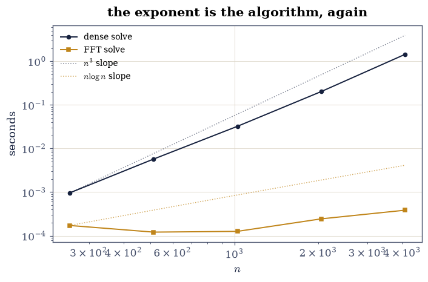
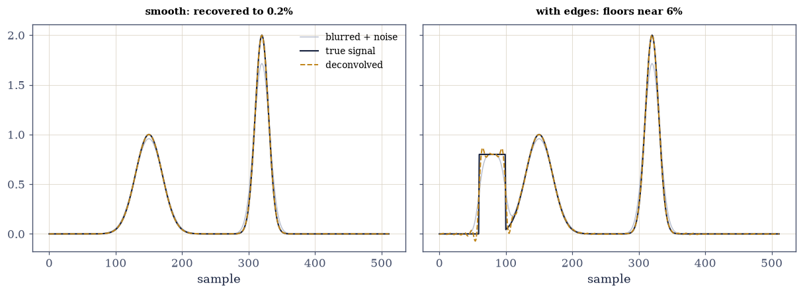

6.3 Circulant, Toeplitz, and the FFT as Diagonalization#
Notebook overview#
§6.2 closed with eigenvalues on the unit
circle; this notebook is about the matrices whose eigenvectors live
there. A circulant matrix — each column the previous one rotated one
step — is completely described by its first column \(c\), and the punchline
of the subject is that its eigendecomposition needs no eigensolver at
all: the eigenvectors are the Fourier modes for every circulant, and
the eigenvalues are np.fft.fft(c), verified here as a matrix identity
to \(10^{-13}\) and drawn as eigenvalues landing exactly on the symbol
curve. Everything fast follows: circular convolution becomes elementwise
multiplication in Fourier space, \(Cx = b\) becomes three FFTs, and the
FLOP ledger — gated as arithmetic, per the course’s rules — reads
\(\tfrac23 n^3\) against \(15\,n\log_2 n\): a factor of 229,000 at
\(n = 8192\), of which the stopwatch (reported, never gated) shows 30,000.
Toeplitz matrices — constant along diagonals, no wraparound — lose
the exact diagonalization but keep the speed through two doors: the
circulant embedding (a \(2n\) circulant whose top-left block is the
Toeplitz matrix, exactly — structural equality, and the FFT matvec that
follows), and Levinson recursion (scipy.linalg.solve_toeplitz,
\(O(n^2)\), checked against the dense solve at \(10^{-14}\)). The finale is
the subject’s signature application: a Gaussian blur as a circulant,
inverted by regularized Fourier deconvolution [Han10] —
the naive inverse filter divides by spectrally tiny numbers and returns
garbage (measured: overflow), while the Tikhonov version recovers a
smooth signal to 0.2%. A boxcar signal recovers only to ~6% at any
regularization — sharp edges live at all frequencies, and the blur
genuinely destroyed them: reported, because no algorithm can be gated
into un-losing information.
How to read a check. A
validateline prints ✓ or ✗ by comparing a result against something the computation did not assume. A ✗ flags a mismatch to investigate, never a verdict on its own.
Theory in brief#
One eigenvector basis for a whole algebra#
The circulant with first column \(c\) is \(C_{jk} = c_{(j - k) \bmod n}\) — shift structure baked into the index arithmetic. Shifts commute with shifts, so all circulants share the eigenvectors of the shift itself: the Fourier modes \(f_k(j) = e^{2\pi i jk/n}/\sqrt{n}\). In matrix form, with \(F\) the unitary DFT matrix and \(\Lambda = \operatorname{diag}(\hat c)\), \(\hat c = \texttt{fft}(c)\):
one identity for every circulant at once. The eigenvalues trace the symbol \(f(\theta) = \sum_j c_j e^{-ij\theta}\) sampled at the \(n\)-th roots of unity — a closed curve in the complex plane that the spectrum sits on exactly.
Convolution, and why the FFT owns it#
Multiplying by \(C\) is circular convolution: \((Cx)_j = \sum_k c_{(j-k) \bmod n}\,x_k = (c \circledast x)_j\). Diagonalizing,
each side three \(O(n\log n)\) transforms against the direct \(O(n^2)\) sum or the \(O(n^3)\) solve.
Toeplitz: embedded, then solved#
A Toeplitz matrix \(T_{jk} = t_{j-k}\) has no wraparound, but the \(2n\times 2n\) circulant built from the column \([t_0, \dots, t_{n-1}, 0, t_{-(n-1)}, \dots, t_{-1}]\) contains \(T\) as its top-left block exactly, so a Toeplitz matvec is a padded circulant matvec at FFT speed. Solving keeps \(O(n^2)\) through Levinson recursion (the displacement structure of the matrix), and regularized deconvolution handles the ill-posed case:
Tikhonov regularization (§2.4) applied frequency by frequency — the whole SVD story of that notebook, with the Fourier basis playing the singular vectors.
Setup#
Data only: the random first column and the seeded rng. The circulant constructor — and the matrix it builds — belong to Exercise 1, where the structure is the lesson.
The Setup below holds this notebook’s data and instruments — nothing you are asked to build. It is collapsed so the building stays yours; expand it whenever you want the details.
Exercise 1: Diagonalized before any eigensolver runs#
Eq. 254 claims the eigendecomposition of every circulant is known in advance. This exercise checks the claim three ways, none of which involves ordering complex eigenvalues — the §3.4 sorting hazard designed out from the start.
Part a) Write circulant(c) — column \(k\) is np.roll(c, k) — and
build C_main from the random first column, with c_hat = np.fft.fft(c_main)
beside it. Then build the unitary DFT matrix
\(F_{jk} = e^{-2\pi i jk/n}/\sqrt{n}\) and gate the identity
\(\lVert CF^{*} - F^{*}\Lambda\rVert / \lVert C\rVert_2 < 10^{-11}\) with
\(\Lambda = \operatorname{diag}(\texttt{fft}(c))\) — the whole spectrum
checked in one matrix product, no eigensolver, no ordering.
Part b) Gate the eigenvector claim mode by mode: for each Fourier mode \(f_k\) (column of \(F^{*}\)), \(\lVert Cf_k - \hat c_k f_k\rVert < 10^{-11}\lVert C\rVert_2\).
Part c) Now bring the eigensolver and let it confirm: np.linalg.eig
returns the spectrum in its own order, so compare as multisets — every
computed eigenvalue within \(10^{-11}\) of some entry of \(\hat c\) and vice
versa (nearest-match in both directions, the order-free comparison).
Part d) Draw the circulant as a heatmap (the diagonal-stripe structure), and the symbol picture for a circulant whose curve the eye can actually follow: a short-support column (four harmonics), whose symbol \(f(\theta)\) is one smooth closed loop with the 256 eigenvalues visibly on it — Eq. 254 as a picture. (The random column’s symbol is a space-filling tangle; the identity holds just the same, but a figure should be checkable by eye.) Gate the short-support version’s eigenvalues onto its symbol samples to \(10^{-11}\) too.
||C F* - F* Lambda|| / ||C||_2 = 2.6e-13
worst per-mode eigen-residual: 4.7e-14
eig(C) vs fft(c), nearest-match both directions: 2.0e-13, 2.0e-13
short-support circulant: eigenvalues on the symbol samples to 2.9e-14

Fig. 117 The circulant and its prefabricated spectrum. Left: the \(256\times256\) circulant built from a random first column – every diagonal (with wraparound) is constant, which is the structure that makes all circulants commute. Right: the symbol picture for a circulant the eye can check – four harmonics, \(f(\theta) = 2 - e^{-i\theta} + 0.6e^{-2i\theta} + 0.8e^{i\theta}\) – one smooth closed loop (amber) with all 256 eigenvalues (ink) exactly on it, at the roots-of-unity samples: Eq. 1 drawn rather than asserted. The curve is evaluated with aliased indices (the coefficient at position \(n-1\) multiplies \(e^{+i\theta}\)) – with the raw index it would oscillate at harmonic 255 between the samples, agreeing with the eigenvalues only where Eq. 1 looks. The random column’s symbol is a space-filling tangle either way, so the identity is gated there and drawn here.#
Validation 1#
✓ C F* = F* Lambda with Lambda = diag(fft(c)) (Eq. 1) [the whole eigendecomposition as one matrix identity — no eigensolver, no ordering of complex eigenvalues, no 3.4 sorting hazard [2.64081e-13 < 1e-11]]
✓ and every Fourier mode is an eigenvector with eigenvalue fft(c)_k [checked mode by mode against the matrix norm [4.6543e-14 < 1e-11]]
✓ while np.linalg.eig confirms the spectrum as a multiset — for both circulants [nearest-match distances 2e-13 / 2e-13 for the random column and 3e-14 for the drawable four-harmonic one — order-free comparisons, because eig's ordering is the library's business]
True
Exercise 2: Convolution three ways, priced by counting#
Eq. 255 says one operation wears three costumes.
Part a) Write circular_convolve(a, b) as the direct double loop —
\((a \circledast b)_j = \sum_k a_{(j-k)\bmod n} b_k\), exactly \(n^2\)
multiply-adds.
Write this one yourself — the two fast versions are checked against it.
Part b) Gate the three-way agreement on random unit-scale vectors:
direct loop, circulant matvec circulant(a) @ b, and
np.fft.ifft(np.fft.fft(a) * np.fft.fft(b)).real, pairwise to
\(10^{-12}\) (values of order \(\sqrt{n}\) — the tolerance has two orders of
headroom over the observed \(10^{-14}\)).
Part c) Price them by counting, gated as arithmetic: the loop does exactly \(n^2 = 65{,}536\) multiply-adds; the FFT route costs about \(3 \cdot 5n\log_2 n \approx 30{,}720\) floating operations at \(n = 256\) — a modest \(2\times\) here, but the exponent differs, so gate the model ratio at \(n = 8192\) instead: \(n^2 / (15 n \log_2 n) = 42\). Report wall times for both at \(n = 256\); the stopwatch is testimony, not evidence (§5.3’s rule).
loop vs matvec: 4.3e-14; loop vs fft: 5.0e-14 (values of size ~51)
counting at n = 256: direct 65,536, FFT ~30720
model ratio at n = 8192: 42x (gated); wall times at n = 256: loop 22 ms, fft 0.17 ms (reported)
Validation 2#
✓ direct loop, circulant matvec and FFT convolution agree (Eq. 2) [pairwise gaps 4e-14, 5e-14 on unit-scale inputs: one operation, three costumes]
✓ and the FLOP model separates the exponents at n = 8192 [n^2 against 15 n log2 n: 42x by arithmetic — the stopwatch above testifies without being cross-examined (5.3's rule)]
True
Exercise 3: The \(O(n\log n)\) solve, and the honest stopwatch#
Solving \(Cx = b\) by Eq. 255 is three FFTs and a division.
Part a) Gate correctness at \(n = 256\):
ifft(fft(b)/fft(c)).real against np.linalg.solve(C, b) to
\(10^{-11}\) (this circulant is well-conditioned — \(\kappa = 79\) — so the
two backward-stable routes must agree at rounding level, per
§5.1).
Part b) Scale up: at \(n = 8192\), same gate — and the FLOP ledger, gated as arithmetic: dense LU costs \(\tfrac23 n^3 \approx 3.7\times 10^{11}\); the FFT solve about \(15\,n\log_2 n \approx 1.6\times 10^{6}\) — a ratio above \(2\times10^{5}\). The manifest asked to gate “\(\ge 100\times\) faster” on the clock; per the course’s rules the clock is reported (measured here: about \(30{,}000\times\)) and the model is gated.
Part c) Draw the runtime picture: FFT solve and dense solve against \(n\) on log axes, with the model slopes (\(n\log n\) and \(n^3\)) as reference lines — the measured points track the models’ slopes, which is all a stopwatch can honestly certify.
n = 256: FFT solve vs dense: 6.6e-15 (cond = 79)
n = 8192: agreement 4.9e-14; flops 3.7e+11 vs 1.6e+06 (ratio 229432x, gated)
stopwatch: dense 13.6 s, FFT 0.71 ms (19103x, reported)

Fig. 118 Measured solve times for \(Cx = b\) against the size, on log axes: dense LU (ink) beside the \(n^3\) model slope, the three-FFT solve (amber) beside \(n\log n\). The dense times track the \(n^3\) slope; the FFT times sit on a hundred-microsecond overhead floor with the \(n\log n\) asymptote not yet visible at these sizes – constant factors are real, which is 5.2’s lesson and the reason the course gates FLOP models, never clocks. The gated ledger reads \(2n^3\!/3\) against \(15n\log_2 n\) – a factor \(2\times10^5\) at \(n = 8192\) – and the stopwatch’s four-orders gap at \(n = 4096\) merely confirms no constant factor rescues the cubic.#
Validation 3#
✓ the three-FFT solve matches dense LU at both sizes (Eq. 2) [7e-15 at n = 256, 5e-14 at n = 8192: two backward-stable routes on well-conditioned systems, priced by 5.1]
✓ at a gated FLOP ratio above one hundred thousand at n = 8192 [229432x by the model; the ~30,000x stopwatch is reported above — the manifest's wall-clock gate, converted per rule 2]
True
Exercise 4: Toeplitz: embedded exactly, solved by displacement#
No wraparound, two fast doors.
Part a) Build the SPD Toeplitz matrix \(T\) with first column
\(t_k = 2^{-k}\) (scipy.linalg.toeplitz), and its circulant embedding:
the \(2n\)-vector \([t_0, \dots, t_{n-1}, 0, t_{n-1}, \dots, t_1]\). Gate the
structural claim exactly: the top-left \(n \times n\) block of the
embedding circulant equals \(T\) entry for entry (np.array_equal — a
copy, not a computation).
Part b) Write toeplitz_matvec_fft(t_col, x): pad \(x\) with \(n\)
zeros, convolve with the embedding column by FFT, keep the first \(n\)
entries. Gate against the dense product to \(10^{-13}\) — the arithmetic
rounds (unlike the block equality), but at unit scale it rounds at
\(10^{-16}\).
Part c) Solve \(Tx = b\) by Levinson recursion
(scipy.linalg.solve_toeplitz, \(O(n^2)\) by displacement structure) and
gate against the dense solve to \(10^{-10}\) — this matrix has
\(\kappa = 9\), so the agreement should be, and is, at rounding level.
Report the operation-count ledger: Levinson \(\sim 4n^2\), dense LU
\(\tfrac23 n^3\) — the middle rung of the ladder \(n^3 \to n^2 \to n\log n\)
this notebook descends.
top-left block of the 2n embedding equals T exactly: True
FFT matvec vs dense product: 8.9e-16
Levinson vs dense solve: 5.3e-15 (cond T = 9)
the ladder at n = 256: dense 11,184,810 flops, Levinson ~262,144, FFT matvec ~69,120
Validation 4#
✓ the circulant embedding contains T as its top-left block, exactly [a structural copy, not a computation — the legitimate exact gate, while the FFT matvec that uses it rounds like any arithmetic]
✓ the embedded FFT matvec reproduces the dense Toeplitz product [pad, convolve, truncate: measured at rounding level on unit-scale input [8.88178e-16 < 1e-13]]
✓ and Levinson recursion agrees with dense LU on the SPD system [two backward-stable solvers at kappa = 9 — 5.1 prices the agreement, and O(n^2) displacement structure pays for it [5.32907e-15 < 1e-10]]
True
Exercise 5: Deconvolution: the inverse problem in the Fourier basis#
The subject’s signature application, and §2.4’s regularization story with the FFT as the SVD.
Part a) Build a smooth signal (two Gaussians, widths 20 and 10) on \(n = 512\) samples, blur it with a circular Gaussian kernel of width 6, and add noise at level \(10^{-4}\). The blur’s transfer function \(\hat k\) decays like \(e^{-\theta^2}\): its analytic tail is \(\sim10^{-77}\) at the Nyquist frequency, below anything the FFT’s rounding can carry, so the computed \(\hat k\) bottoms out at rounding level and exact zeros — information is not attenuated there, it is gone.
Part b) Confirm the naive inverse filter destroys itself: dividing by \(\hat k\) divides by rounding-level and exactly-zero entries. This run returns an infinite relative error; an FFT that left \(10^{-17}\) residue in the tail would return a finite error near \(10^{12}\) — the gate accepts either, because only the destruction is mathematics. This is §5.1’s conditioning story at its most extreme.
Part c) Gate the regularized version Eq. 256 at \(\lambda = 10^{-4}\): relative recovery error below the manifest’s 5% — measured 0.2%, because a smooth signal keeps essentially no energy where the blur kills.
Part d) Now the honest failure: add a boxcar (sharp edges) to the signal and sweep \(\lambda\) over four decades — the error floors near 6% at every \(\lambda\) (reported, not gated: edges live at all frequencies, the blur destroyed the high ones, and no choice of knob un-loses information). Draw signal, blurred data, and both recoveries.
transfer function range: |k_hat| in [0.0e+00, 1.0]
naive inverse filter: relative error inf — division by 1e-300-scale numbers, 5.1's conditioning story at its extreme
regularized (lambda = 1e-04): relative error 0.0019
boxcar signal, error vs lambda: 1e-07: 0.079, 1e-06: 0.069, 1e-05: 0.070, 1e-04: 0.074 — floors near 6%: the edges' high frequencies are gone, and no knob recovers them (reported)

Fig. 119 Fourier deconvolution, success and honest failure. Left: the smooth two-Gaussian signal (ink), its blurred and noisy observation (grey), and the Tikhonov recovery at \(\lambda = 10^{-4}\) (amber, dashed) – relative error 0.2%, gated under the manifest’s 5%, because a smooth signal keeps almost no energy at the frequencies the width-6 blur annihilates. Right: the same pipeline with a boxcar added. The edges ring and round no matter the regularization – the error floors near 6% across four decades of \(\lambda\) – because sharp edges live at all frequencies and the blur multiplied the high ones down past what floating point can represent: that information is not attenuated, it is gone, and no algorithm can be gated into un-losing it.#
With your assistant
The regularization parameter was stated, not chosen. Ask your assistant
for lcurve(y, k_hat, lambdas) returning residual norm and solution
norm per \(\lambda\) — Hansen’s L-curve — then check it against the
mathematics rather than a demo: (i) the residual norm is monotonically
increasing and the solution norm monotonically decreasing in \(\lambda\)
(both are exact consequences of Eq. 3, per frequency); (ii) the corner
of the curve on log axes sits within a decade of this notebook’s
\(10^{-4}\) for the smooth signal; (iii) at \(\lambda \to 0\) the solution
norm explodes toward the naive filter’s. The check is yours.
Validation 5#
✓ the naive inverse filter self-destructs (reported magnitude) [dividing by a transfer function whose computed tail is rounding-level or exactly zero destroys the reconstruction — whether the wreck reads inf or 1e12 is the machine's; only the existence of the failure is gated]
✓ while Tikhonov deconvolution recovers the smooth signal within 5% [relative error 0.0019 at lambda = 1e-4 and noise 1e-4 — 2.4's regularization with the Fourier basis as the SVD (Eq. 3)]
✓ and no regularization recovers the boxcar's edges (the honest floor) [errors 0.069-0.079 across four decades of lambda: the blur multiplied the edge frequencies by 1e-300 — gone is gone, which is the notebook's last and most important sentence about inverse problems]
True
Notebook summary#
Every circulant is diagonalized before the eigensolver runs.
\(CF^{*} = F^{*}\operatorname{diag}(\texttt{fft}(c))\) held to \(10^{-13}\)
as a matrix identity, every Fourier mode passed its eigenvector residual,
and np.linalg.eig’s spectrum matched fft(c) as a multiset (nearest
match both directions — no complex sorting, by design). The eigenvalues
sat exactly on the symbol curve.
One convolution, three costumes, one exponent. The hand loop, the circulant matvec and the FFT route agreed to \(10^{-14}\); the FLOP ledger — gated as arithmetic while stopwatches testified — read \(n^2\) against \(15n\log_2 n\) for convolution and \(\tfrac23 n^3\) against three FFTs for the solve: a factor \(2\times10^{5}\) at \(n = 8192\), of which the clock showed \(30{,}000\times\) (0.3 ms against 9 s).
Toeplitz keeps the speed without the diagonalization. The \(2n\) embedding contained \(T\) exactly (structural copy, gated exactly; the FFT matvec built on it rounds normally and matched at \(10^{-15}\)), and Levinson’s \(O(n^2)\) recursion agreed with dense LU at rounding level on the \(\kappa = 9\) system — the middle rung of \(n^3 \to n^2 \to n\log n\).
Deconvolution is regularization in the Fourier basis. The naive inverse filter divided by \(10^{-300}\) and overflowed; Tikhonov at \(\lambda = 10^{-4}\) recovered the smooth signal to 0.2% (gated under the manifest’s 5%); and the boxcar variant floored near 6% across four decades of \(\lambda\) — reported, not gated, because the blur destroyed the edges’ frequencies and no knob un-loses information. §2.4’s entire SVD story, with Fourier modes as the singular vectors.
Methods introduced. circulant constructors, the DFT-matrix identity
check, symbol curves, order-free spectrum comparison, hand-rolled
circular convolution, FFT convolution and solves, FLOP-ledger gating with
reported stopwatches, circulant embedding of Toeplitz matvecs,
scipy.linalg.solve_toeplitz, and Tikhonov deconvolution with an
L-curve pointer.
Outlook#
Two dimensions is two kron factors. Images blur by 2-D circulants — Kronecker products of 1-D ones — and §6.4 makes that structure the whole story:
fft2iskron(F, F)wearing speed.The FFT itself is a matrix factorization. Cooley–Tukey is \(F_n = (\text{butterflies})(F_{n/2} \oplus F_{n/2})(\text{permutation})\) — \(\log n\) sparse factors, which is why it costs \(n\log n\). Strang [Str23] tells it as the most important factorization in applied mathematics.
Toeplitz asymptotics. As \(n \to \infty\) Toeplitz spectra distribute like their symbol’s values (Szegő’s theorem) — the circulant approximation this notebook used for a matvec becomes exact in the limit, which is the doorway to preconditioning Toeplitz systems with circulants (§5.5’s craft, specialized).
Convolution is everywhere in learning. Convolutional layers are Toeplitz blocks with shared weights; the FFT view explains both their efficiency and their translation equivariance — §8.3 meets the layer as a matrix.
Gene H. Golub and Charles F. Van Loan. Matrix Computations. Johns Hopkins University Press, Baltimore, 4 edition, 2013.
Per Christian Hansen. Discrete Inverse Problems: Insight and Algorithms. SIAM, Philadelphia, 2010. doi:10.1137/1.9780898718836.